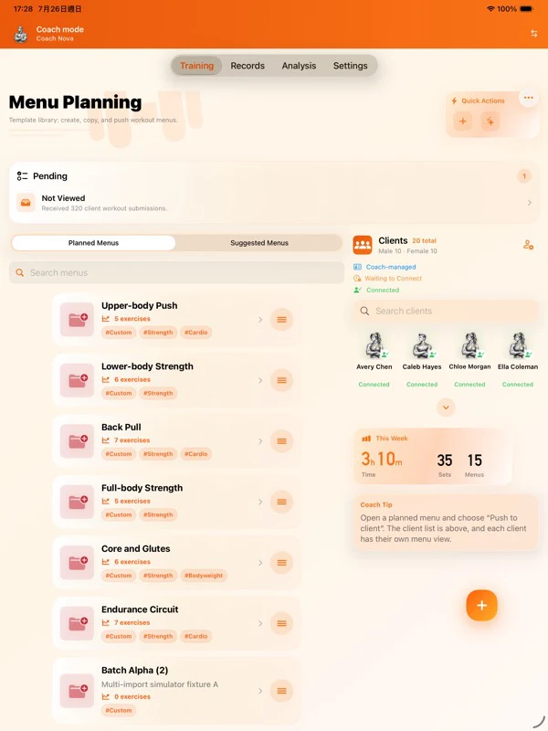
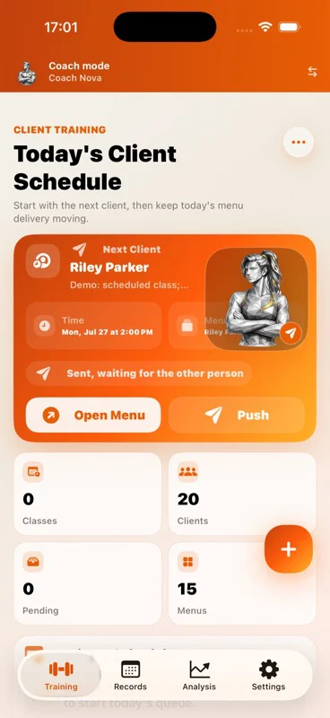
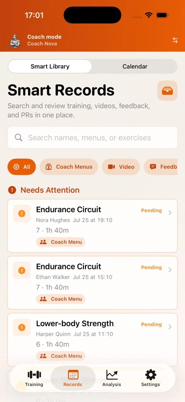
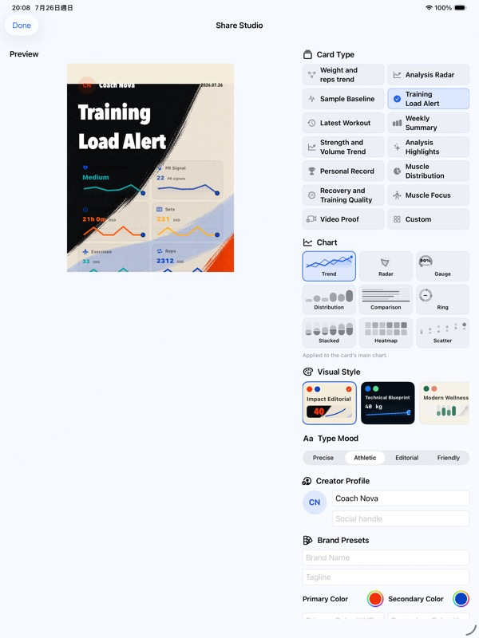
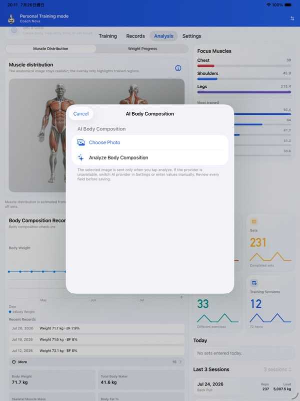
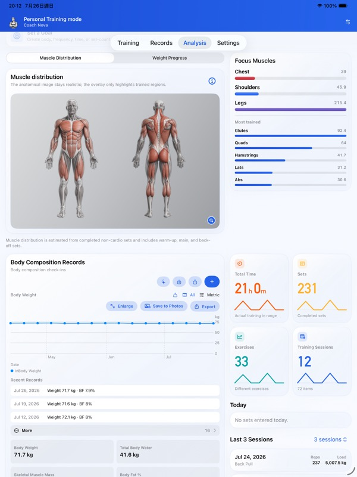
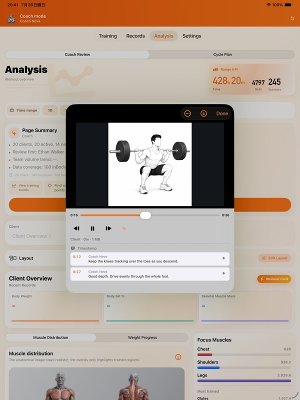

One roster, complete context
Keep connected athletes and coach-managed clients in the same roster. Search first, open the existing profile, and avoid splitting one person across duplicate records.
Coach-first training operations
Run your roster, deliver training, and make the next coaching decision in one workspace.
Built for the work around every session: client context, schedules, plan delivery, assisted logging, submission review, and progress analysis—without leaving the athlete experience behind.


Coach control center
FitRoster Pro puts the coach’s highest-frequency work first. The roster, today’s schedule, plan delivery, client records, and pending reviews stay connected to the right person.
Keep connected athletes and coach-managed clients in the same roster. Search first, open the existing profile, and avoid splitting one person across duplicate records.
See today’s next client, prepare or copy a menu, schedule it, and push it to a connected athlete while preserving the training context.
For clients who do not yet use FitRoster, record the coached session from their profile. It contributes to that client and team analysis—not the coach’s personal history or HealthKit.
Find pending submissions, video, feedback, and PR signals in the smart record library. Review the actual session, add time-linked feedback, and request a revision when needed.
Current coach workspace
The current beta interface surfaces the next athlete, delivery status, roster counts, smart record filters, and work that still needs coach attention.

Client lifecycle
A client can begin as coach-managed and move into a connected relationship after installing FitRoster. The workflow changes; the client identity and history do not need to be recreated.
The coach maintains menus and records sessions for a client who does not yet use the app.
Start the connection from the existing profile and keep the invitation state visible.
Deliver menus, receive completed sessions, review feedback, and confirm the next action within the relationship.

Decisions, not decoration
Team and individual views connect sessions, body records, training distribution, goals, and periodization. The point is not another chart—it is knowing who needs intervention, who can progress, and why.
Complete training system
Beyond coach operations, FitRoster Pro covers the full path from detailed capture to analysis, media, sharing, adaptable interfaces, and user-started AI workflows.
Track menus, exercises, sets, reps, load, units, RPE/RIR, rest, laterality, notes, PR signals, discomfort, body entries, and calendar history with searchable filters.
Create a training-focused share card from the athlete’s own records, choose what appears, preview it, and use the system share sheet.
Coach-side production of share content from trainee data is not available.
Connect volume, frequency, muscle distribution, body trends, goals, cycle KPIs, team status, and individual records to support the next decision.
Select the provider and model, review the data categories for that request, and confirm the result before it changes a record or plan.
Switch among four complete presentation styles while keeping the same data and workflows.
Attach training video to the relevant work, let the coach add time-linked feedback, return revisions, and download media when it is needed offline.
Real workflow outcomes
These are current English iPad screens from the beta: a finished share card, reviewed body-composition data, and video feedback anchored to the exact playback time.
The athlete selects the card, data blocks, chart, style, and profile visibility before opening the system share sheet. Coaches cannot create share content from trainee data.

Body-composition recognition begins only after the user chooses a photo. The extracted values remain reviewable before they become part of progress history.


The coach can pause, step through frames, change playback speed, and leave multiple comments at precise timestamps. The athlete can jump directly back to each point.

Terms in plain language
AI and data boundaries
FitRoster Pro is designed so the user chooses when an AI workflow starts, which provider and model it uses, and which data categories are included for that request.
Optional plan drafts, reports, insights, and voice parsing use the provider and model selected in Settings and may use the user’s own API key.
Name, notes, body data such as weight, recent training, and discomfort signals are not sent by default. Only categories explicitly enabled for that request are included. Coach AI for a specific athlete also requires the athlete’s consent for the purpose, provider, and model.
FitRoster Pro is intended only for users who have reached the legal age of adulthood where they live. No separate FitRoster account is required, while iCloud and device state can affect sync features.
Important: FitRoster Pro supports training organization and communication. It is not medical diagnosis, treatment, or emergency guidance. Review every plan and stop when symptoms require professional care.
See how it works
The live guide covers setup, coach-managed clients, connection states, planning, session records, review, analysis, optional AI, backup, and privacy controls in every supported language.